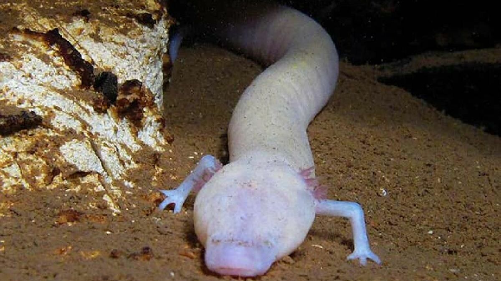

Salamanders are a group of amphibians typically characterized by a lizard-like appearance,
with slender bodies, blunt snouts, short limbs projecting at right angles to the body,
and the presence of a tail in both larvae and adults.
All present-day salamander families are grouped together under the order Urodela.
Salamander diversity is highest in the Northern Hemisphere and most species are found in the Holarctic
realm,
with some species present in the Neotropical realm.
Salamanders rarely have more than four toes on their front legs
and five on their rear legs, but some species have fewer digits
and others lack hind limbs. Their permeable skin usually makes
them reliant on habitats in or near water or other cool, damp places.
Some salamander species are fully aquatic throughout their lives,
some take to the water intermittently, and others are entirely terrestrial as adults.
Çünkü hem karada gidebiliyorlar hem de suda

Salamanders rarely have more than four toes on their front legs and five on their rear
legs,
but some species have fewer digits and others lack hind limbs. Their permeable skin usually makes them
reliant on
habitats in or near water or other cool, damp places. Some salamander species are fully aquatic throughout
their
lives, some take to the water intermittently, and others are entirely terrestrial as adults.
They are capable of regenerating lost limbs, as well as other damaged parts of their bodies.
Researchers hope to reverse engineer the remarkable regenerative processes for potential
human medical applications, such as brain and spinal cord injury treatment or preventing harmful scarring
during heart surgery recovery..
Erkek yurduna'nun amblemi haline gelmiştir.
Members of the family Salamandridae are mostly known as newts and lack the costal
grooves along the sides of their bodies typical of other groups. The skin of some species contains
the powerful poison tetrodotoxin; these salamanders tend to be slow-moving and have bright warning
coloration to advertise their toxicity. Salamanders typically lay eggs in water and have aquatic larvae,
but great variation occurs in their lifecycles. Some species in harsh environments reproduce while still
in the larval state.